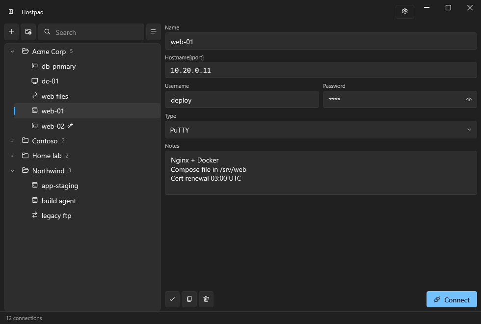

Hostpad
A connection manager for Windows. Keep every remote machine in one place and open it with a double click — SSH, SFTP, SCP, FTP, Remote Desktop or VNC, through the client tools you already use.



An address book, not another terminal
Hostpad keeps the list, the credentials and the notes. PuTTY, WinSCP, mstsc and your VNC viewer keep doing what they are good at.
The idea comes from AutoPuTTY, a tool that did this job well for many years. Hostpad is freely inspired by it — no fork, no shared code, written from scratch — and brings the idea up to date: folders, real encryption, a Windows 11 interface, and the fields that used to be encoded inside other fields turned into fields of their own.
What it does
Organise
- Nested folders, and connections that belong to no folder at all
- Drag and drop, rename in place with F2
- Search across name, host, user and notes — the tree flattens while you hunt
- A notes field per connection, for the things you always forget
Connect
- PuTTY, Remote Desktop, VNC, and WinSCP in SFTP, SCP and FTP modes
- Right click opens the same host with any of the other tools
- SSH jump hosts as real fields, tunnelled through plink
- Private keys, post-login commands, X11 forwarding, screen size, mounted drives
Protect
- The list is encrypted with AES-256-GCM, always
- Without a master password it is tied to your Windows account through DPAPI: no prompt, and useless to anyone who copies the file
- With one it opens on another computer too — which is what makes a backup worth having
- PBKDF2-HMAC-SHA256, with the iteration count stored in the file so it can be raised later
Move data in and out
- Import from AutoPuTTY: passwords, notes, folders recovered from name prefixes, jump hosts
- Export a password-protected copy, with or without the saved credentials
- Import merges rather than replaces, and asks about names that already exist
Install
Take Hostpad-<version>-win-x64.exe from the
release page
and run it: it carries the .NET runtime inside and needs nothing installed.
The smaller builds need the
.NET 10 Desktop Runtime.
Or through Scoop, which checks the download for you:
scoop bucket add hostpad https://github.com/Hostpad/scoop-bucket
scoop install hostpad/hostpad
Your data lives in %USERPROFILE%\.hostpad. Windows 10 or 11,
64-bit.
Verifying your download
Hostpad is not code-signed, so SmartScreen warns the first time you run it: Windows protected your PC → More info → Run anyway. A certificate costs money the project does not have.
What you get instead is a hash, and a build you can trace. Every release is produced by the release workflow on the GitHub runners from the tagged commit — no file on a release page is uploaded from a developer machine — and the SHA-256 of each file is written into the release notes.
Get-FileHash .\Hostpad-<version>-win-x64.exe -Algorithm SHA256If it matches the release page, the file is the one the workflow built. If it does not, do not run it, wherever you got it from.
Free software
GPLv3 or later. Fork it, modify it, redistribute it. The name “Hostpad” is not covered by that licence: please rename your fork so users can tell the projects apart.
The only official releases are published at github.com/Hostpad/Hostpad. Copies distributed elsewhere, in particular paid ones, are not from us.
Bug reports, ideas and patches are welcome.